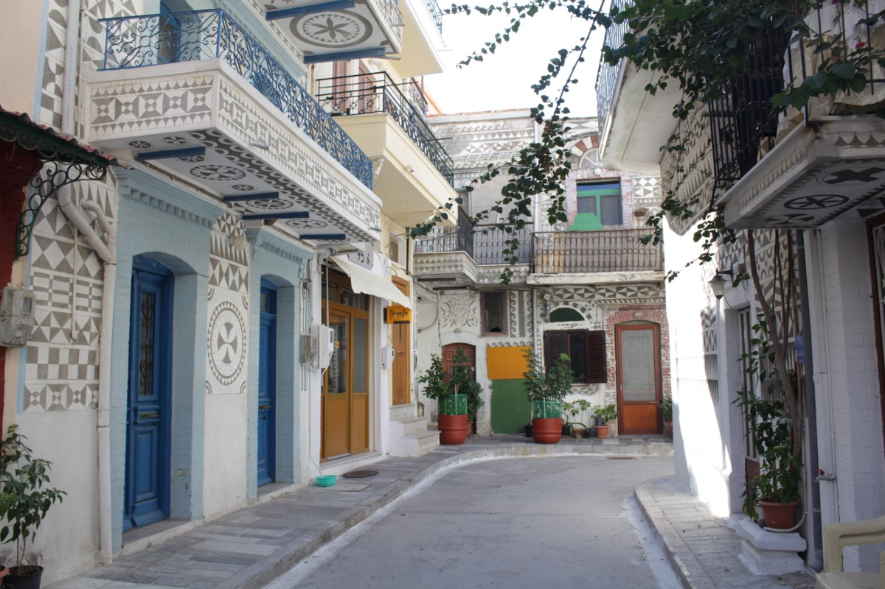

Sakız Adası'nın en özgün deneyimi, adanın güneyindeki "Mastichochoria" yani sakız köylerini gezmek. Pyrgi ve Mesta, Yunanistan'da başka hiçbir yerde göremeyeceğiniz bir mimari sunar.
Pyrgi — Renkli Köy

Adanın en fotojenik yerlerinden biri. Evlerin duvarları "xysta" adı verilen geometrik desenlerle siyah-beyaz olarak süslenmiş. Köyün meydanındaki Ayios Apostoloi Kilisesi de mutlaka görülmeli.
Mesta — Ortaçağ Labirenti
Taş evleri, kemerli geçitleri ve dar sokaklarıyla adeta bir açık hava müzesi. Köyün ortasındaki kale benzeri yapı ve merkezi meydan, geleneksel taverna kültürünü yaşatıyor. Burada yerel üretim sakız likörü "mastiha" tatmadan dönmeyin.
Mastic Müzesi
Pyrgi yakınlarında bulunan bu modern müze, sakız ağacının yetiştirilmesinden hasadına, tarihsel önemine kadar her şeyi interaktif sergilerle anlatıyor. Sakızın binlerce yıldır neden bu kadar değerli olduğunu anlamak için ideal bir durak.